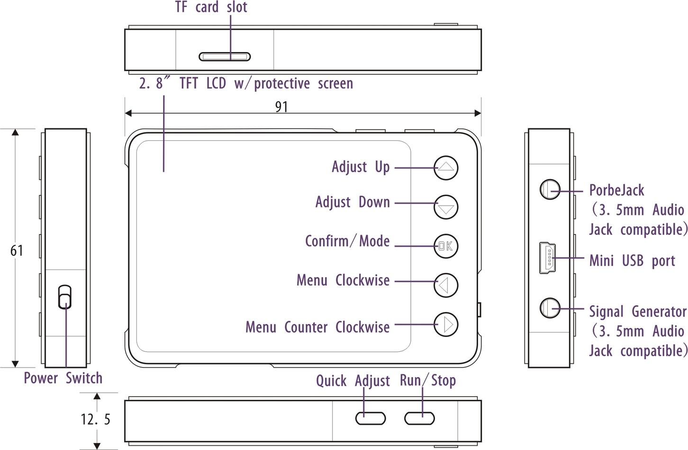
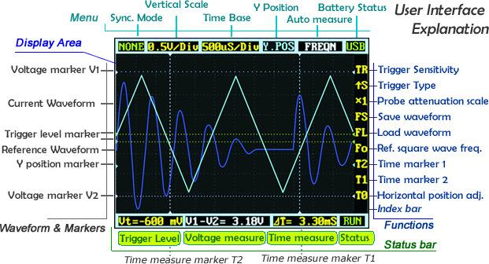
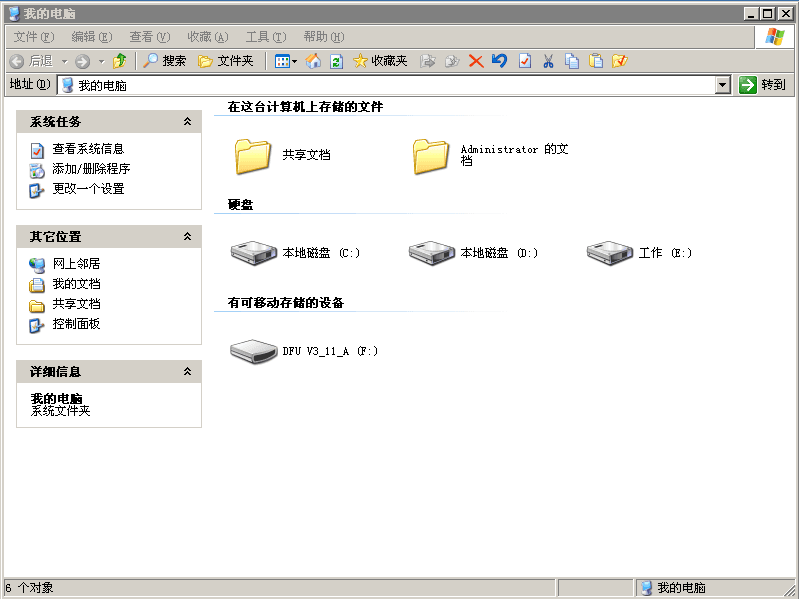
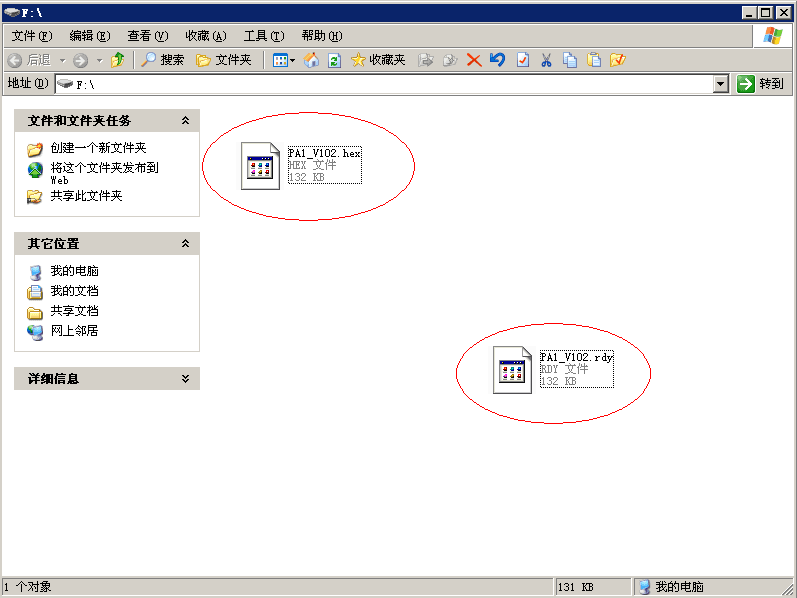

DSO Nano v3 is a portable digital storage oscilloscope. Based on a 32-bit ARM Cortex-M3 microcontroller, it is equipped with 320*240 color display, USB port and recharging function. It is compact, simple to operate; meets the basic demands of school labs, electrical repairs and engineering. The version 3 of DSO Nano differs from version 2 in that it does not use a white plastic case. Instead, it uses a black metal case which is more durable and strong.
Model: TOL131B2P

To ensure your safety & avoid any damages to the product/connected devices, please read the following safety rules carefully. To avoid any possible dangers, please use this product according to the rules.
| Display | Full Color 2.8" TFT LCD 65K 320×240 |
| Analog bandwidth | 0 - 200KHz |
| Max sample rate | 1Msps 12Bits |
| Sample memory depth | 4096 Point |
| Horizontal sensitivity | 1uS/Div~10S/Div |
| Horizontal position | adjustable with indicator |
| Vertical sensitivity | 10mV/Div~10V/Div (with ×1 probe) |
| 0.5V/Div~100V/Div (with ×10 probe) | |
| Vertical position | adjustable with indicator |
| Input impedance | >500KΩ |
| Max input voltage | 80Vpp (by ×1 probe) |
| Coupling | DCs |
| Trig modes | Auto, Normal, Single, None, Scan and Fit |
| Rising/Falling edge/level trigger | |
| Trig level adjustable with indicator | |
| Trig sensitivity adjustable with indicator | |
| Waveform Functions | Auto measurement: frequency, cycle time, duty cycle, peak voltage, RMS voltage, Average voltage and DC voltage |
| Precise vertical measurement with markers | |
| Precise horizontal measurement with markers | |
| Hold/Run | |
| Signal Generator | 10Hz~1MHz square wave |
| Waveform storage | Micro SD card |
| PC connection via USB | as SD card reader |
| Upgrade | USB |
| Power supply | 500mAh 3.7V Lithium battery / USB |
| Dimension (w/o probe) | 91mm*62mm*13mm |

Note: My device (Serial E1C5A0C1) does NOT have the indicated "TF card slot". There is no slot in the metal case and even if you open the case, there is no connector on the board (nor even a place to have put a connector).
Left/Right buttons are mainly used to navigate through menu items. The selected menu item will be highlighted; its corresponding screen element will blink. Press UP/Down buttons to adjust. The OK button controls display/hide markers or confirm operations.
Pressing A (Run/Stop) Button once will freeze the current display. Press 'A' again to resume. The B (Shift) Button is used for quick functions.
Throughout this text, adjustable items will be labeled in red.

The screen is broken into a central display area and 3 operation bars around it. The menu on the top provides the most frequently-used adjustments to signal display. The status bar on the bottom provides precise measurement results and monitoring status. Adjust more advanced functions with the column of function icons on the right.
Move the cursor to the Vertical Scale and Time Base to start exploring the signal display. Press the up/down buttons to adjust the voltage/div or time/div. Each “div” is a grid unit "division" of the screen; count the divisions to estimate a quick measurement. The vertical scale ranges from 10mV/div to 10V/div. The time base ranges from 1uS/div to 10S/div. Beware that in the larger time bases the display may look frozen, since 10S/div means it takes 120 seconds to refresh whole the screen (12 divs wide).
The waveform might be out of the range of the display even in the appropriate voltage/div setting. You can change the Y position to move the waveform up and down to center the wave onscreen. The Y position marker indicates 0V for your reference.
Press button A to freeze the current display (setting the status to HOLD) and press again to resume refreshing (status RUN). With the status on HOLD, you can select the T0 icon and press the up/down buttons to pan back and forth. Press the OK button to display or hide the X position marker (a yellow dotted vertical line).
The Nano has six triggering modes, accessible in the top left corner of the screen. These are:
AUTO: Always refresh the display, and synchronize when triggered.
NORM (al): Display synchronized waveform when triggered, and blank if not triggering.
SING (le): Display triggered waveform and hold, then blank again before triggering.
SCAN: Repeatedly sweep waveform onscreen left to right.
NONE: Refresh unsynchronized waveform ignoring triggering.
FIT: Automatically adjust vertical and horizontal scale to display waveform.
| Mode | Trigger | Display Waveform | Synchronization | Example Applications |
|---|---|---|---|---|
| AUTO | Yes | Always | Yes | General use |
| NORM | Yes | Triggered | Yes | Only watch periodic signals |
| SING | Yes | Triggered | Auto-hold | Capture a random pulse |
| SCAN | No | Always | No | Keep monitoring signals |
| NONE | No | Always | No | Watch an unsynchronized waveform |
| FIT | Yes | Auto-adjust | Yes | Easily watch periodic signals |
To set the triggering level, move cursor to Vt = ??.?mV and press the up/down buttons. Press OK to display or hide the trigger level markers (horizontal green dotted lines). To fine tune triggering, you may tweak the trigger sensitivity range TR and the trigger type. By default the trigger type is set to up S which means the trigger will fire when the signal crosses from the lower trigger line to the higher line. Down S will likewise trigger on a falling signal edge.
This could prevent mistaken triggering caused by noise, especially while measuring fast low-amplitude signals. If you set the sensitivity to 0, where the two trigger level markers overlap each other, you get level triggering. Please refer to Wikipedia for more informaiton on oscilloscope triggering.

Auto measurement is useful for quickly exploring signal characteristics. Measurement options include frequency, cycle time, duty cycle, peak voltage, RMS voltage, average voltage and DC voltage. Please note that frequency, cycle time and duty cycle can only be measured while triggering.
To get a more precise measurement, use the measurement markers. T2 and T1 control the time markers, the two vertical dotted lines. A precise time difference between two marker positions is displayed in "time measure" near bottom of the screen. The V1 marker and V2 marker can be adjusted directly from the "voltage measure" result panel ("V1-V2=? V") at the bottom center of the screen.
Pressing the OK button in a menu item will hide or show the corresponding line onscreen.
Waveforms can be saved to an mirco SD card or loaded to the display. You need a micro SD card to do this (not included). Please note that SDHC cards (high-speed cards larger than 2 GB) are not supported for now. Follow the below steps to set up your microSD card:
When the microSD card is prepared, the FS (file save), FL (file load) and SI(image save) icons are enabled. Press the OK button on FS to save a waveform, or on FL to load the waveform from the microSD card. Also you could select SI for saving oscillogram in PNG format.
The 3.5mm audio jack under the mini USB port is used for the signal generator. It outputs a square wave from 10Hz to 1MHz. Frequency can be adjusted via Fo ("frequency out"). The peak voltage is the same as the supplied power, or approximately 3.7v if powered from battery, and 5v when powered by USB.
The DSO Nano can be powered by the internal 500mAh LiPo battery or by the external mini-USB port. Charging takes about 2 hours 20 minutes to reach 4.12V. A brand-new unit can only run about 1 hour by battery, but the battery life will be extended after the LiPo battery is fully charged.

To upgrade firmware, please perform following steps:
NOTE that if there are multiple hex files (e.g. the BenF firmware) you must copy EACH file ONE at a time and wait for it to change to "RDY" before you copy the next one. So, if you have file1.hex and file2.hex then the process would be:
Under windows you will see the "drive" disappear after you copy each hex file and reappear with the rdy file.
 
DSO Nano v3 is of hardware v2.6 and firmware app v2.6 , you could find them on Resources.
Acutall, both of they are the with same hardware and firmware, also they of the same version of DFU which is used for upgrading firmware. So the main difference is the shell, DSO Nan v3 is with black metal shell instead of the white plastic shell on DSO Nano v2.
Can be used when your DSO's bricked.
This documentation is licensed under the Creative Commons Attribution-ShareAlike License 3.0 Source code and libraries are licensed under GPL/LGPL, see source code files for details.